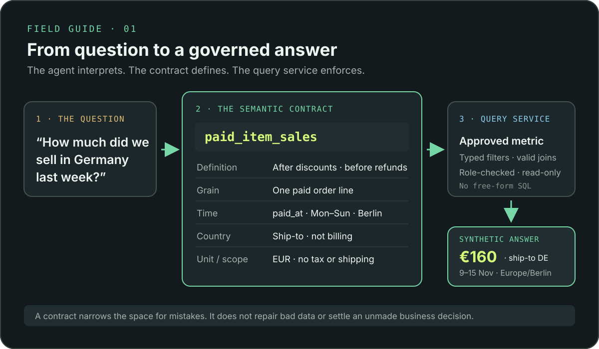

An analyst at a fictional online shop asks an analytics agent:
“How much did we sell in Germany last week?”
The agent returns €160. It might be right. It might have used order date instead of payment date, billing country instead of shipping country, or a version of “sales” that includes tax and shipping. The answer can look perfectly reasonable while answering a different question.
The temptation is to add another paragraph to the system prompt: Use the right metric. Don’t make assumptions. Be accurate. But a prompt cannot settle a business definition the business has not settled.
The fix starts one layer below the prompt: give the agent a semantic contract—an explicit, testable definition of what it can ask for and what the result means.
This is the first article in a practical field guide to trustworthy analytics agents. It focuses on the contract between business meaning, the data model, and the query interface. If you want to see the agent loop first, start with the earlier build walkthrough. The examples below use a fictional shop and invented data.
A metric name is a label, not a definition
Imagine finding a jar labelled “sauce” in a shared kitchen. The label tells you almost nothing about what is inside, what it is for, or whether it contains something you cannot eat. A metric named revenue has the same problem. It is a useful label; it is not the full recipe.
Two reasonable people may use “revenue” to mean different things:
- cash collected or revenue recognized under accounting rules
- before or after discounts, cancellations, and refunds
- with or without tax, shipping, or marketplace fees
- attributed to the order date, payment date, or refund date
The model has no reliable way to discover which interpretation your team agreed on unless that meaning is represented somewhere it can use.
Think of the semantic contract as the recipe card behind the label. People decide what the metric should mean. The semantic model records that decision. A semantic query engine uses the model to build a query. The agent’s job is to map a question to that defined interface—not to invent the recipe.

What belongs in the contract?
There is no single file format or universal semantic-layer product that every team must use. The contract might live in dbt, Cube, LookML, a warehouse semantic view, or another governed metric service. The important part is that the meaning is explicit and the query interface can enforce what is valid.
Start with the details that would change the answer:
Not every metric needs a long description. The useful test is: could two reasonable users make different choices here and get different numbers? If yes, document the choice and encode it in the model or query boundary where possible.
For example, dbt’s current documentation for v1.12 and later describes semantic models with entities, dimensions, and metrics. The exact configuration differs from older dbt projects, so use the documentation for your installed version rather than copying a YAML snippet from an older tutorial. The concepts—grain, relationships, time, and metric definition—are more portable than any one product’s syntax.
A worked example: Northstar Bikes
Let’s make the opening question answerable. Northstar Bikes is fictional and sells only in euros.
The team agrees to expose a metric called paid_item_sales:
- Definition: sum of paid order-line value after discounts.
- Excludes: tax, shipping, test orders, and voided orders.
- Refunds: reported separately by refund date; this metric is before refunds.
- Grain: one row per order line.
- Time:
paid_at, grouped into complete Monday-to-Sunday weeks inEurope/Berlin. - Country: shipping destination, not billing address.
- Currency: EUR.
This is a business choice for the example, not a universal definition of sales. Another company may need a different metric. The contract makes the choice visible instead of asking the model to guess.
For the complete week from 9 November through 15 November 2026, suppose the trusted model contains these rows:
| Order line | Ship-to | Paid at (Berlin time) | Item value after discount | Included? |
|---|---|---|---|---|
| A-104 | Germany | Mon 9 Nov, 09:14 | €100 | Yes |
| A-109 | Germany | Fri 13 Nov, 14:02 | €60 | Yes |
| A-110 | Austria | Wed 11 Nov, 11:30 | €90 | No — different country |
| A-113 | Germany | Sun 8 Nov, 23:30 | €40 | No — outside the week |
| A-115 | Germany | Fri 13 Nov, 15:10 | €500 | No — test order |
Under this contract, the answer for Germany is €160. The number is not impressive; the important part is that another analyst can reproduce it and see exactly what it means.
The agent should not silently turn “How much did Germany make?” into this metric. “Make” might mean paid sales or contribution profit. It should ask which one the user means. If the user asks “What were paid item sales in Germany last week?”, the application can use the agreed defaults and show them alongside the result:
€160 in paid item sales for Germany, 9–15 November 2026. This uses shipping country and payment date; it excludes tax, shipping, test orders, and voided orders. Refunds are reported separately.
That is usually more helpful than making the user approve every routine query. Ask when a choice is genuinely ambiguous or the consequence of a wrong interpretation is high; otherwise, answer with the definition and filters visible.
Keep the model’s job small
A useful architecture separates four responsibilities:
- The business owns meaning. Finance or the relevant domain owner agrees what the metric means and resolves conflicts.
- The semantic model records it. Metric logic, grain, time dimensions, entities, and valid dimensions are reviewed and versioned with the data model.
- The query service enforces it. A semantic API or constrained tool validates the metric, dimensions, filters, and time range, then executes the query.
- The agent translates and explains. It maps the user’s wording to the available contract, asks when it cannot do so safely, and explains the returned result.
That third boundary matters. A function call or an MCP connection is a way to expose tools; it does not, by itself, make a query governed. The application still needs to validate tool arguments and decide which operations are allowed. Where a semantic query API is available, expose structured inputs such as a metric name, approved dimensions, typed filters, and a bounded time range—not a free-form SQL string that the model can turn into arbitrary warehouse access.
Keep authorization outside the prompt. Use server-side credentials with the least privileges the use case needs, and preserve the intended user or role restrictions in the data platform. A sentence saying “only show this user their accounts” is not an access-control boundary. The query service and warehouse permissions must enforce that rule.
The response should carry enough context to be checked: the metric used, the time range and time zone, filters or groupings, currency or unit, and data freshness when available. Don’t ask the model to invent provenance after the query; return it from the system that actually ran the query.
What the semantic contract does not solve
A well-defined metric is a strong guardrail, not a truth machine. It cannot repair stale source data, a bad upstream transformation, a wrong grain declaration, or a business definition that nobody has agreed on. If an order-line table is accidentally duplicated, a beautifully named metric can still return a beautifully wrong total.
Test the contract like production data code:
- Check keys and relationships at the declared grain.
- Reconcile representative metric queries against a trusted report or independently reviewed result.
- Include boundary cases: week starts, time zones, late-arriving events, null dimensions, currency conversion, refunds, and cancellations where relevant.
- Test that unsupported metrics and dimensions are rejected, not silently substituted.
- Check results under the roles your users actually have.
- Review metric-definition changes with the business owner and make the change visible to downstream users.
For an agent, test more than whether its tool call succeeds. Include questions that are clear, ambiguous, unsupported, and near a time boundary. Verify that it selects the right metric and filters, asks a useful clarification when required, and describes the returned data accurately.
Answer, clarify, or decline?
If you’ve read my earlier agent-build example, I used confirmation before every query to make the safety behavior easy to see. Treat that as a conservative prototype choice, not a rule that every production agent should interrupt every user. Make the clarification policy explicit, then test it against real question patterns and the impact of a wrong answer.
Start with one metric
You do not need to model the whole warehouse before building an agent. Pick one question people ask often and one metric they already trust. Sit with its owner and write down the definition, grain, time behavior, dimensions, and access rules. Encode the parts the semantic layer supports, test them against known results, and expose only the query operations the agent needs.
When that works, add the next metric. A small, well-defined surface is more useful than a giant catalog whose names look authoritative but whose meaning is unclear.
Takeaways
- A metric name is not a metric definition. Specify the calculation, scope, grain, time, units, and valid relationships that can change the answer.
- Let the business choose the meaning. The semantic model can record and execute that decision; the LLM should not make it up at query time.
- Use a constrained, authorized query boundary. Typed metric queries, server-side validation, and data-platform permissions matter more than extra prompt warnings.
- Be transparent without being obstructive. Show the definition and filters; ask only when the ambiguity or impact calls for it.
- Test the whole contract. Validate the data, joins, edge cases, access rules, and the agent’s metric selection—not just whether a query ran.
Sources and version notes
Checked on 16 November 2026. Vendor configuration and product capabilities change; verify the documentation for the version and deployment you use.
- dbt semantic models — current v1.12+ model components and configuration.
- dbt Semantic Layer — centrally defined metrics, query integrations, and permissions.
- Administer the dbt Semantic Layer — credentials and least-privilege setup.
- About the dbt MCP server — current MCP integrations and available tool categories.
- OpenAI function calling and Anthropic tool use — structured tool calls are requests that the application handles; the application executes and returns tool results.
The semantic contract is the recipe card. The agent can help choose the right card and explain what came back. It should not be asked to make up the recipe while everyone is waiting for dinner.